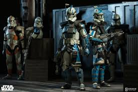

Close Relationships

- Rex – Trusted ARC trooper and loyal friend
- Echo – Domino Squad brother and fellow survivor
- Tup – Comrade during the Umbara campaign
- Hevy – Brave squadmate who gave his life on Rishi Moon
- Anakin Skywalker – Jedi General who respected Fives’ integrity
- Kix – Medic who cared for Fives during his final mission
- 99 – Disabled clone that always supported Fives and Domino squad
- Separatist Battle Droids – The mechanical army of the Confederacy, responsible for countless clone casualties during the Clone Wars.
- Chancellor Palpatine – The Sith Lord behind the Republic’s downfall and the mastermind of the inhibitor chip conspiracy.
- Commander Fox – A loyal clone misled by Palpatine’s orders who tragically executed Fives on Coruscant.
- General Pong Krell – A corrupt Jedi who betrayed the clones during the Umbara campaign
- Dogma – A fellow clone who blindly followed orders during the Umbara conflict
- Nala Se – A Kaminoan scientist who helped conceal the true purpose of the inhibitor chips